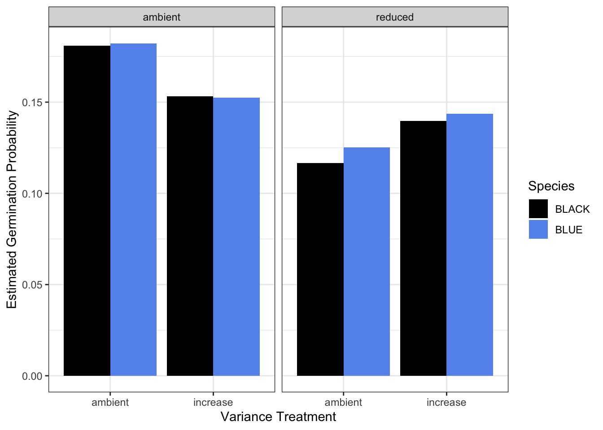

library(readr)
library(dplyr)
library(tidyr)
library(tidyverse)
library(ggplot2)
library(viridis) # colorblind friendly color palette
library(reshape2)
library(vegan)
library(lme4)
library(car)
library(readxl)
library(googlesheets4)
library(lubridate)
library(bbmle)
library(lmtest)MVE Blue Seeds
Background
The Sevilleta Long Term Ecological Research (LTER) Program (Socorro, NM) rolled out a novel climate change experiment in 2019: the Mean-Variance Experiment (MVE). The experiment has been replicated in four ecosystems to date but the focus of this document is on the experimental infrastructure found in the Great Plains Grassland ecosystem, dominated by blue grama grass (Bouteloua gracilis). Hence Mean-Variance Blue or MVE Blue. The ecosystem is dominated by blue grama grass but the adjacent ecosystem, Chihuahuan Desert Grassland, is dominated by black grama grass (Bouteloua eriopoda). Great Plains Grassland extends northward throughout central North America while Chihuahuan Desert Grassland extends southward into Mexico. Thus, under a more arid climate, we would expect Chihuahuan Desert Grassland to expand it’s range northward. The experimental infrastructure is set near the ecotone of these two ecosystems. More information on this experiment can be found here: https://sevlter.unm.edu/mean-variance-experiment/. To test the recruitment dynamics of these dominant plants under climate change, we added seeds of each species to the experimental plots from 2019-2023 and tracked their germination and survival biweekly during the growing season and monthly during the dormant season.
Objectives
- Read in seed monitoring data for all five years, treatments, soil moisture data, climate data.
- Explore data, provide summary statistics.
- Create graph of typical climate for temperature and precipitation.
- Find the best model for the germination data using year and mean and variance treatments as predictors
- Graph germination by year, mean, and variance by species.
- Find best model of survival by species, year, and mean and variance treatments. Or a model for each species. Graph.
- Figure out the 1-3 events each year where 90-95% of germination occurs and isolate germination and soil moisture to those events and build a model to understand how soil moisture determines germination probability. Graph.
- Characterize die off/survival. Is it gradual and consistent or happen in major events like germination. Graph?
- Figure out how to test for legacy effects on germination and/or survival. Graph.
Setup
Read in necessary packages.
Clean and Wrangle Data
Bring in seed monitoring data for all five years, bring in keys, bring in soil moisture data, bring in climate data.
print("Dont run this code")
# bring in each year of data (2019-2023, 5 years total)
# De-authorize googlesheets to bypass log-in
googlesheets4::gs4_deauth()
# Load in the data from google drive (make loop or function)
blue_2019 <- as.data.frame(googlesheets4::read_sheet(
ss="https://docs.google.com/spreadsheets/d/1BDSYfiaHBwYWqZEIeu27-rVX_AMyd407eGlDyf7hc6g/edit?gid=1889905658#gid=1889905658"))
blue_2020 <- as.data.frame(googlesheets4::read_sheet(
ss="https://docs.google.com/spreadsheets/d/1RfcWQR4zSo-6zbAwZbR5s9DhxPF_gderfNvnlOFTxLE/edit#gid=974160277"))
blue_2021 <- as.data.frame(googlesheets4::read_sheet(
ss="https://docs.google.com/spreadsheets/d/1Y6MBlHEawdBZKeywWfAKHqT4wDQxGLlTCyE1NG0Mfe8/edit#gid=1947016736"))
blue_2022 <- as.data.frame(googlesheets4::read_sheet(
ss="https://docs.google.com/spreadsheets/d/1bixaeVyjCgqI7d3j5kNcQwR9zRAd9duY9ipoA2uWvaY/edit#gid=1207134008"))
blue_2023 <- as.data.frame(googlesheets4::read_sheet(
ss="https://docs.google.com/spreadsheets/d/1712pb0TIKS5K3FU3-pRHc9oI3K6uavZMcF8a3YW8SHY/edit#gid=0"))
# Change column header dates to be readable by R (make loop or fxn)
names(blue_2019)[str_detect(names(blue_2019), "\\d{5}")] <-
format(as.Date(as.numeric(names(blue_2019)[str_detect(names(blue_2019), "\\d{5}")]), origin = "1899-12-30"), "%d-%b-%y")
names(blue_2020)[str_detect(names(blue_2020), "\\d{5}")] <-
format(as.Date(as.numeric(names(blue_2020)[str_detect(names(blue_2020), "\\d{5}")]), origin = "1899-12-30"), "%d-%b-%y")
names(blue_2021)[str_detect(names(blue_2021), "\\d{5}")] <-
format(as.Date(as.numeric(names(blue_2021)[str_detect(names(blue_2021), "\\d{5}")]), origin = "1899-12-30"), "%d-%b-%y")
names(blue_2022)[str_detect(names(blue_2022), "\\d{5}")] <-
format(as.Date(as.numeric(names(blue_2022)[str_detect(names(blue_2022), "\\d{5}")]), origin = "1899-12-30"), "%d-%b-%y")
names(blue_2023)[str_detect(names(blue_2023), "\\d{5}")] <-
format(as.Date(as.numeric(names(blue_2023)[str_detect(names(blue_2023), "\\d{5}")]), origin = "1899-12-30"), "%d-%b-%y")
# Give the cohort name for each dataframe (make loop or fxn)
blue_2019$Add_Year <- 2019
blue_2020$Add_Year <- 2020
blue_2021$Add_Year <- 2021
blue_2022$Add_Year <- 2022
blue_2023$Add_Year <- 2023
# convert columns to numeric (make loop or fxn)
blue_2019 <- blue_2019 %>%
mutate(across( # mutate observations in multiple columns
matches("\\d{1,2}-"), # that contain digits in the column name
as.numeric))
blue_2020 <- blue_2020 %>%
mutate(across( # mutate observations in multiple columns
matches("\\d{1,2}-"), # that contain digits in the column name
as.numeric))
blue_2021 <- blue_2021 %>%
mutate(across( # mutate observations in multiple columns
matches("\\d{1,2}-"), # that contain digits in the column name
as.numeric))
blue_2022 <- blue_2022 %>%
mutate(across( # mutate observations in multiple columns
matches("\\d{1,2}-"), # that contain digits in the column name
as.numeric))
blue_2023 <- blue_2023 %>%
mutate(across( # mutate observations in multiple columns
matches("\\d{1,2}-"), # that contain digits in the column name
as.numeric))
# make TP ID (make loop or fxn)
blue_2019$TP_ID<-
with(blue_2019,
paste0(Add_Year, Plot, Species, Corner, Row, Column))
blue_2020$TP_ID<-
with(blue_2020,
paste0(Add_Year, Plot, Species, Corner, Row, Column))
blue_2021$TP_ID<-
with(blue_2021,
paste0(Add_Year, Plot, Species, Corner, Row, Column))
blue_2022$TP_ID<-
with(blue_2022,
paste0(Add_Year, Plot, Species, Corner, Row, Column))
blue_2023$TP_ID<-
with(blue_2023,
paste0(Add_Year, Plot, Species, Corner, Row, Column))
# pivot long (make loop or fxn)
blue_2019_long <-
pivot_longer(blue_2019,
cols = c("2019-09-07":"2019-10-13"),
names_to = "Obs_Date",
values_to = "Germ.binom") %>%
mutate(Obs_Date=as.Date(Obs_Date,format="%Y-%m-%d")) # Format dates
unique(blue_2019_long$Obs_Date)
blue_2020_long <-
pivot_longer(blue_2020,
cols = c("7/31/2020":"6/2/2023"),
names_to = "Obs_Date",
values_to = "Germ.binom") %>%
mutate(Obs_Date=as.Date(Obs_Date,format="%m/%d/%Y")) # Format dates
unique(blue_2020_long$Obs_Date)
blue_2021_long <-
pivot_longer(blue_2021,
cols = c("2021-07-26":"2024-05-06"),
names_to = "Obs_Date",
values_to = "Germ.binom") %>%
mutate(Obs_Date=as.Date(Obs_Date,format="%Y-%m-%d")) # Format dates
unique(blue_2021_long$Obs_Date)
blue_2022_long <-
pivot_longer(blue_2022,
cols = c("2022-07-05":"2024-04-03"),
names_to = "Obs_Date",
values_to = "Germ.binom") %>%
mutate(Obs_Date=as.Date(Obs_Date,format="%Y-%m-%d"))
# Format dates
unique(blue_2022_long$Obs_Date)
blue_2023_long <-
pivot_longer(blue_2023,
cols = c("2023-07-07":"2024-08-05"),
names_to = "Obs_Date",
values_to = "Germ.binom") %>%
mutate(Obs_Date=as.Date(Obs_Date,format="%Y-%m-%d"))
# Format dates
unique(blue_2023_long$Obs_Date)
# reduce germ to 1 (make loop or function)
blue_2019_long <-
blue_2019_long %>%
mutate(
Germ.binom =
case_when(
Germ.binom == 1 ~ 1
, Germ.binom == 2 ~ 1
, Germ.binom == 3 ~ 1
, Germ.binom == 0 ~ 0
)
)
blue_2020_long <-
blue_2020_long %>%
mutate(
Germ.binom =
case_when(
Germ.binom == 1 ~ 1
, Germ.binom == 2 ~ 1
, Germ.binom == 3 ~ 1
, Germ.binom == 0 ~ 0
)
)
blue_2021_long <-
blue_2021_long %>%
mutate(
Germ.binom =
case_when(
Germ.binom == 1 ~ 1
, Germ.binom == 2 ~ 1
, Germ.binom == 3 ~ 1
, Germ.binom == 0 ~ 0
)
)
blue_2022_long <-
blue_2022_long %>%
mutate(
Germ.binom =
case_when(
Germ.binom == 1 ~ 1
, Germ.binom == 2 ~ 1
, Germ.binom == 3 ~ 1
, Germ.binom == 0 ~ 0
)
)
blue_2023_long <-
blue_2023_long %>%
mutate(
Germ.binom =
case_when(
Germ.binom == 1 ~ 1
, Germ.binom == 2 ~ 1
, Germ.binom == 3 ~ 1
, Germ.binom == 0 ~ 0
)
)
# order by germ binom then by obs date in order to rm duplicates (make loop or function)
blue_2019_long_reduced <- blue_2019_long[order(-blue_2019_long$Germ.binom, blue_2019_long$Obs_Date), ]
blue_2020_long_reduced <- blue_2020_long[order(-blue_2020_long$Germ.binom, blue_2020_long$Obs_Date), ]
blue_2021_long_reduced <- blue_2021_long[order(-blue_2021_long$Germ.binom, blue_2021_long$Obs_Date), ]
blue_2022_long_reduced <- blue_2022_long[order(-blue_2022_long$Germ.binom, blue_2022_long$Obs_Date), ]
blue_2023_long_reduced <- blue_2023_long[order(-blue_2023_long$Germ.binom, blue_2023_long$Obs_Date), ]
# remove duplicates (make loop or function)
blue_2019_long_reduced <- blue_2019_long_reduced %>%
distinct(TP_ID, Plot, Corner, Species, Row, Column, Add_Year, .keep_all = TRUE)
blue_2020_long_reduced <- blue_2020_long_reduced %>%
distinct(TP_ID, Plot, Corner, Species, Row, Column, Add_Year, .keep_all = TRUE)
blue_2021_long_reduced <- blue_2021_long_reduced %>%
distinct(TP_ID, Plot, Corner, Species, Row, Column, Add_Year, .keep_all = TRUE)
blue_2022_long_reduced <- blue_2022_long_reduced %>%
distinct(TP_ID, Plot, Corner, Species, Row, Column, Add_Year, .keep_all = TRUE)
blue_2023_long_reduced <- blue_2023_long_reduced %>%
distinct(TP_ID, Plot, Corner, Species, Row, Column, Add_Year, .keep_all = TRUE)
# Get each year ready fro rbind (make loop or fxn)
blue_2019_long_reduced <-
blue_2019_long_reduced %>%
select(
Plot,
Corner,
Species,
Row,
Column,
TP_ID,
Add_Year,
Obs_Date,
Germ.binom
)
blue_2020_long_reduced <-
blue_2020_long_reduced %>%
select(
Plot,
Corner,
Species,
Row,
Column,
TP_ID,
Add_Year,
Obs_Date,
Germ.binom
)
blue_2021_long_reduced <-
blue_2021_long_reduced %>%
select(
Plot,
Corner,
Species,
Row,
Column,
TP_ID,
Add_Year,
Obs_Date,
Germ.binom
)
blue_2022_long_reduced <-
blue_2022_long_reduced %>%
select(
Plot,
Corner,
Species,
Row,
Column,
TP_ID,
Add_Year,
Obs_Date,
Germ.binom
)
blue_2023_long_reduced <-
blue_2023_long_reduced %>%
select(
Plot,
Corner,
Species,
Row,
Column,
TP_ID,
Add_Year,
Obs_Date,
Germ.binom
)
blue_19_23_reduced <- rbind(
blue_2019_long_reduced,
blue_2020_long_reduced,
blue_2021_long_reduced,
blue_2022_long_reduced,
blue_2023_long_reduced
)
summary(blue_19_23_reduced)
write_csv(blue_19_23_reduced, "germ_19_23.csv")Create an alternative dataset that preserves raw data.
# Get each year ready for rbind (make loop or fxn)
blue_2019_long <-
blue_2019_long %>%
select(
Plot,
Corner,
Species,
Row,
Column,
TP_ID,
Add_Year,
Obs_Date,
Germ.binom
)
blue_2020_long <-
blue_2020_long %>%
select(
Plot,
Corner,
Species,
Row,
Column,
TP_ID,
Add_Year,
Obs_Date,
Germ.binom
)
blue_2021_long <-
blue_2021_long %>%
select(
Plot,
Corner,
Species,
Row,
Column,
TP_ID,
Add_Year,
Obs_Date,
Germ.binom
)
blue_2022_long <-
blue_2022_long %>%
select(
Plot,
Corner,
Species,
Row,
Column,
TP_ID,
Add_Year,
Obs_Date,
Germ.binom
)
blue_2023_long <-
blue_2023_long %>%
select(
Plot,
Corner,
Species,
Row,
Column,
TP_ID,
Add_Year,
Obs_Date,
Germ.binom
)
blue_19_23_long_raw <- rbind(
blue_2019_long,
blue_2020_long,
blue_2021_long,
blue_2022_long,
blue_2023_long
)
write_csv(blue_19_23_long_raw, "germ_19_23_long_raw.csv")
# use this for soil moistureMake a data frame that looks at the current year and past year cohorts for each monsoon season. Those will be the trials for probability. But first confirm that most germination happens in first two years.
# first look at germination over time by data for each year added -- I expect that we can reduce each one the year planted and the year after, so as to not inflate zeros
# use previously reduced data
blue_19_23 <- read_csv("germ_19_23.csv")Rows: 26581 Columns: 9
── Column specification ────────────────────────────────────────────────────────
Delimiter: ","
chr (4): Corner, Species, Column, TP_ID
dbl (4): Plot, Row, Add_Year, Germ.binom
date (1): Obs_Date
ℹ Use `spec()` to retrieve the full column specification for this data.
ℹ Specify the column types or set `show_col_types = FALSE` to quiet this message.# Isolate by year
blue_19 <- blue_19_23 %>%
filter(Add_Year == 2019 & Germ.binom == 1) %>%
mutate(Germ_Year = year(Obs_Date)-2018)
# hist(blue_19$Germ_Year)
blue_20 <- blue_19_23 %>%
filter(Add_Year == 2020 & Germ.binom == 1) %>%
mutate(Germ_Year = year(Obs_Date) - 2019)
# hist(blue_20$Germ_Year)
blue_21 <- blue_19_23 %>%
filter(Add_Year == 2021 & Germ.binom == 1) %>%
mutate(Germ_Year = year(Obs_Date) - 2020)
# hist(blue_21$Germ_Year)
blue_22 <- blue_19_23 %>%
filter(Add_Year == 2022 & Germ.binom == 1) %>%
mutate(Germ_Year = year(Obs_Date) - 2021)
# hist(blue_22$Germ_Year)
blue_23 <- blue_19_23 %>%
filter(Add_Year == 2023 & Germ.binom == 1) %>%
mutate(Germ_Year = year(Obs_Date) - 2022)
# hist(blue_23$Germ_Year)
blue_years <- rbind(blue_19, blue_20, blue_21, blue_22, blue_23)
hist(blue_years$Germ_Year)total <- sum(blue_years$Germ.binom)
# get some percentages
year_sum <- blue_years %>%
group_by(Germ_Year) %>%
summarise(percent = (sum(Germ.binom)/total)*100)75% of germinated seeds occur in their first year, 20% occur in second year, 4% in the third and 0.77% in 4th year.
Sufficient evidence to reduce to first year and second year.
# Make a dataframe for each years crops of available seeds to germ
blue_19_23_long_raw <- read_csv("germ_19_23_long_raw.csv")
summary(blue_19_23_long_raw)
# reduce to observations in the first and second year
blue_2yrs <- blue_19_23_long_raw %>%
filter(year(Obs_Date) < Add_Year+2)
# check your work
which(blue_2yrs$Add_Year == 2023 & year(blue_2yrs$Obs_Date) > 2024)
blue_2yrs$Obs_Year <- year(blue_2yrs$Obs_Date)
blue_2yrs <- blue_2yrs %>%
mutate(Year = case_when(Obs_Year == Add_Year ~ 1,
Obs_Year == Add_Year+1 ~ 2))
# Reduce to germination or zero germination per year
# If it germinates in Year = 1 it should be removed from Year = 2
blue_Y1 <- blue_2yrs %>%
filter(Year == 1)
blue_Y1 <- blue_Y1[order(-blue_Y1$Germ.binom, blue_Y1$Obs_Date), ]
# remove duplicates (make loop or function)
blue_Y1 <- blue_Y1 %>%
distinct(TP_ID, Plot, Corner, Species, Row, Column, Add_Year, .keep_all = TRUE)
blue_Y2 <- blue_2yrs %>%
filter(Year == 2)
blue_Y2 <- blue_Y1[order(-blue_Y2$Germ.binom, blue_Y2$Obs_Date), ]
# remove duplicates (make loop or function)
blue_Y2 <- blue_Y2 %>%
distinct(TP_ID, Plot, Corner, Species, Row, Column, Add_Year, .keep_all = TRUE)
# Remove TP_IDs that germinated in Y1 from Y2
head(blue_Y1)
germs <- blue_Y1$TP_ID[which(blue_Y1$Germ.binom == 1)]
blue_Y2_filt <- blue_Y2 %>%
group_by(TP_ID) %>%
filter(!any(TP_ID %in% c(germs))) %>%
ungroup()
which(blue_Y2_filt$TP_ID == "202116BLUENE1G")
blue_y1_y2 <- rbind(blue_Y1, blue_Y2_filt)
blue_y1_y2 <- blue_y1_y2 %>%
mutate(plot = Plot)
write_csv(blue_y1_y2, "blue_year_cohorts.csv")trts<-read.csv("meanvar_blue_treatments.csv")
str(trts)# path to where the load_MVE_data_into_R.R file is located - CHANGE THIS TO THE PATH ON YOUR COMPUTER
source("load_MVE_data_into_R.R")
process_mve <- function(site, year_to_process) {
# process_mve function:
#
# Takes raw .dat MVE files as input and produces a long version of the data the data
# as output.
#
# Function arguments:
# site: "blue", "black", "creosote", "pj", "jsav" are the choices for site, entered into
# the function with quotes
# year: 4-digit year (YYYY) entered into the function without quotes
# subsets data to be >= to year requested here
filter_to_year <- year_to_process
# folder where final data will be written - CHANGE THIS TO THE PATH ON YOUR COMPUTER WHERE YOU
# WANT TO WRITE OUT THE PROCESSED FILES
folder_out <- "MVE-seeds"
# name of final output file for year of data being processed
sub_file_name <- if (site == 'blue') {
paste0("MVE_PlainsGrassland_SoilMoistureTemperature_", filter_to_year, ".csv")
} else if (site == "black") {
paste0("MVE_DesertGrassland_SoilMoistureTemperature_", filter_to_year, ".csv")
} else if (site == "creosote") {
paste0("MVE_Creosote_SoilMoistureTemperature_", filter_to_year, ".csv")
} else if (site == "pj") {
paste0("MVE_PJ_SoilMoistureTemperature_", filter_to_year, ".csv")
} else if (site == "jsav") {
paste0("MVE_JSav_SoilMoistureTemperature_", filter_to_year, ".csv")
}
# load MVE data ------------------------------------------------------------
file_to_load <- if (site == "blue") {
"MVE_Blue.dat"
} else if (site == "black") {
"MVE_Black.dat"
} else if (site == "creosote") {
"MVE_Creosote.dat"
} else if (site == "pj") {
"MVE_PJ_Table1_52423_MVC_2023_05_24_10_49_50.dat"
} else if (site == "jsav") {
"MVE_JSAV_Table1_52423_MVC_2023_05_24_12_46_59.dat"
} else {
NULL
}
mve <- read_mve_in(file_to_load) |>
select(-RECORD)
# Note: For Blue, data prior to 2022-10-04 08:00:00 needs to be loaded from a file
# because the data loggers were reset to capture data from some new sensors that
# were installed.
# loading file for old MVE Blue data -
mve_blue_old <- if (site == "blue") {
read_mve_in("MVE_Blue.dat.backup") |>
mutate(VWC_P2_12_NEW = as.numeric(NA), # Need to add these new variables as NAs to old data in order to combine with newer data
VWC_P2_22_NEW = as.numeric(NA),
VWC_P2_37_NEW = as.numeric(NA)) |>
select(-RECORD)
} else {
NULL
}
mve_sub <- if (site == "blue") {
rbind(mve, mve_blue_old) |>
arrange(TIMESTAMP) |>
unique() |>
filter(year(TIMESTAMP) == filter_to_year)
} else {
mve |>
arrange(TIMESTAMP) |>
unique() |>
filter(year(TIMESTAMP) == filter_to_year)
}
mve_sub_long <- if (site == "blue") {
mve_sub |>
pivot_longer(-TIMESTAMP, names_to = "sensor_id") |>
separate(sensor_id, into = c("sensor", "plot", "depth", "new"), sep = "_", remove = FALSE)
} else if (site == "black") {
mve_sub |>
pivot_longer(-TIMESTAMP, names_to = "sensor_id") |>
separate(sensor_id, into = c("plot", "depth", "sensor", "avg"), sep = "_", remove = FALSE)
} else if (site == "creosote") {
mve_sub |>
pivot_longer(-TIMESTAMP, names_to = "sensor_id") |>
separate(sensor_id, into = c("sensor", "piece1", "piece2", "piece3", "avg"), sep = "_", remove = FALSE) |>
mutate(plot1split = ifelse(piece1 %in% c(2, 3), NA, piece1),
plot2split = ifelse(piece2 %in% c(12, 22, 37), NA, piece2),
depth1split = ifelse(piece2 %in% c(12, 22, 37), piece2, NA),
depth2split = ifelse(piece3 %in% c(12, 22, 37), piece3, NA),
plot_extra = ifelse(piece1 %in% c(2, 3), piece1, NA),
plot = ifelse((!is.na(plot1split) & is.na(plot2split)), plot1split, plot2split),
depth = ifelse((!is.na(depth1split) & is.na(depth2split)), depth1split, depth2split)) |>
select(-c(avg, piece1, piece2, piece3, plot1split, plot2split, depth1split, depth2split))
} else if (site == "pj") {
mve_sub |>
pivot_longer(-TIMESTAMP, names_to = "sensor_id") |>
separate(sensor_id, into = c("sensor", "piece1", "piece2", "piece3", "piece4"), sep = "_", remove = FALSE) |>
mutate(plot1split = ifelse(piece1 %in% c(2, 3), NA, piece1),
plot2split = ifelse(piece2 %in% c(12, 22, 37), NA, piece2),
depth1split = ifelse(piece2 %in% c(12, 22, 37), piece2, NA),
depth2split = ifelse(piece3 %in% c(12, 22, 37), piece3, NA),
plot_extra = ifelse(piece1 %in% c(2, 3), piece1, NA),
plot = ifelse((!is.na(plot1split) & is.na(plot2split)), plot1split, plot2split),
depth = ifelse((!is.na(depth1split) & is.na(depth2split)), depth1split, depth2split)) |>
select(-c(piece1, piece2, piece3, piece4, plot1split, plot2split, depth1split, depth2split))
} else if (site == "jsav") {
mve_sub |>
pivot_longer(-TIMESTAMP, names_to = "sensor_id") |>
separate(sensor_id, into = c("sensor", "piece1", "piece2", "piece3", "piece4"), sep = "_", remove = FALSE) |>
mutate(plot1split = ifelse(piece1 %in% c(2, 3), NA, piece1),
plot2split = ifelse(piece2 %in% c(12, 22, 37), NA, piece2),
depth1split = ifelse(piece2 %in% c(12, 22, 37), piece2, NA),
depth2split = ifelse(piece3 %in% c(12, 22, 37), piece3, NA),
plot_extra = ifelse(piece1 %in% c(2, 3), piece1, NA),
plot = ifelse((!is.na(plot1split) & is.na(plot2split)), plot1split, plot2split),
depth = ifelse((!is.na(depth1split) & is.na(depth2split)), depth1split, depth2split)) |>
select(-c(piece1, piece2, piece3, piece4, plot1split, plot2split, depth1split, depth2split))
} else {
NULL
}
write_csv(mve_sub_long, paste0(folder_out, sub_file_name))
return(paste("Data processing complete for site", site, "for year", year_to_process))
}
# Note: you will get a warning message when running the function because of how the
# raw data is formatted and needs to be processed.
# running these functions writes processed data to the output folder - only need to do once
# for prior years, but need to run the current year each time you get new, updated raw data
process_mve("blue", 2023)
process_mve("blue", 2022)
process_mve("blue", 2021)
process_mve("blue", 2020)
process_mve("blue", 2019)
process_mve("blue", 2018)
sm_t_18 <- read_csv("MVE-seedsMVE_PlainsGrassland_SoilMoistureTemperature_2018.csv")
sm_t_19 <- read_csv("MVE-seedsMVE_PlainsGrassland_SoilMoistureTemperature_2019.csv")
sm_t_20 <- read_csv("MVE-seedsMVE_PlainsGrassland_SoilMoistureTemperature_2020.csv")
sm_t_21 <- read_csv("MVE-seedsMVE_PlainsGrassland_SoilMoistureTemperature_2021.csv")
sm_t_22 <- read_csv("MVE-seedsMVE_PlainsGrassland_SoilMoistureTemperature_2022.csv")
sm_t_23 <- read_csv("MVE-seedsMVE_PlainsGrassland_SoilMoistureTemperature_2023.csv")met_00_04 <- read_csv("https://portal.edirepository.org/nis/dataviewer?packageid=knb-lter-sev.1.17&entityid=371109f8068b35cf65edc8ba4237c8bd")
met_05_09 <- read_csv("https://portal.edirepository.org/nis/dataviewer?packageid=knb-lter-sev.1.17&entityid=e326dbe48c0cdc5b91496a469a50e36d")
met_10_14 <- read_csv("https://portal.edirepository.org/nis/dataviewer?packageid=knb-lter-sev.1.17&entityid=011fd6eb9726321cace6c72b50cb8056")
met_15_19 <- read_csv("https://portal.edirepository.org/nis/dataviewer?packageid=knb-lter-sev.1.17&entityid=76922a0b041ac5ab05be6132ff7f90d7")
met_20_23 <- read_csv("https://portal.edirepository.org/nis/dataviewer?packageid=knb-lter-sev.1.17&entityid=65056476604ff22cb44dcc3d3bebfd2a")
unique(met_00_04$StationID)
met_00_04_50 <- met_00_04 %>%
filter(StationID == 50) %>%
select(StationID,
Date_Time,
Date,
Year,
Month,
Day_of_Month,
Julian_Day,
Hour,
Temp_C,
Min_Temp_C,
Max_Temp_C,
Precipitation)
unique(met_00_04_50$StationID)
str(met_00_04_50)
unique(met_05_09$StationID)
met_05_09_50 <- met_05_09 %>%
filter(StationID == 50) %>%
select(StationID,
Date_Time,
Date,
Year,
Month,
Day_of_Month,
Julian_Day,
Hour,
Temp_C,
Min_Temp_C,
Max_Temp_C,
Precipitation)
unique(met_05_09_50$StationID)
unique(met_10_14$StationID)
met_10_14_50 <- met_10_14 %>%
filter(StationID == 50) %>%
select(StationID,
Date_Time,
Date,
Year,
Month,
Day_of_Month,
Julian_Day,
Hour,
Temp_C,
Min_Temp_C,
Max_Temp_C,
Precipitation)
unique(met_10_14_50$StationID)
unique(met_15_19$StationID)
met_15_19_50 <- met_15_19 %>%
filter(StationID == 50) %>%
select(StationID,
Date_Time,
Date,
Year,
Month,
Day_of_Month,
Julian_Day,
Hour,
Temp_C,
Min_Temp_C,
Max_Temp_C,
Precipitation)
unique(met_15_19_50$StationID)
unique(met_20_23$StationID)
met_20_23_50 <- met_20_23 %>%
filter(StationID == 50) %>%
select(StationID,
Date_Time,
Date,
Year,
Month,
Day_of_Month,
Julian_Day,
Hour,
Temp_C,
Min_Temp_C,
Max_Temp_C,
Precipitation)
unique(met_20_23_50$StationID)
met_00_23_50 <- rbind(met_00_04_50,
met_05_09_50,
met_10_14_50,
met_15_19_50,
met_20_23_50)
write_csv(met_00_23_50, "met_50.csv")Read in Cleaned Data
These are all the datasets cleaned above, this saves R time.
blue_19_23 <- read_csv("germ_19_23.csv") # reduced to only first germ
blue_19_23_long_raw <- read_csv("germ_19_23_long_raw.csv") # All binomial observations from first germ through survival
bluebyyear <- read_csv("blue_year_cohorts.csv")
trts<-read.csv("meanvar_blue_treatments.csv")
sm_t_18 <- read_csv("MVE-seedsMVE_PlainsGrassland_SoilMoistureTemperature_2018.csv")
sm_t_19 <- read_csv("MVE-seedsMVE_PlainsGrassland_SoilMoistureTemperature_2019.csv")
sm_t_20 <- read_csv("MVE-seedsMVE_PlainsGrassland_SoilMoistureTemperature_2020.csv")
sm_t_21 <- read_csv("MVE-seedsMVE_PlainsGrassland_SoilMoistureTemperature_2021.csv")
sm_t_22 <- read_csv("MVE-seedsMVE_PlainsGrassland_SoilMoistureTemperature_2022.csv")
sm_t_23 <- read_csv("MVE-seedsMVE_PlainsGrassland_SoilMoistureTemperature_2023.csv")
met_00_23_50 <- read_csv("met_50.csv")Data Exploration
Our data objects are ‘blue_19_23’, ‘trts’, ‘sm_t_18’:‘sm_t_23’, ‘met_00_23_50’,‘blue_19_23_long_raw’,‘bluebyyear’
summary(blue_19_23) Plot Corner Species Row
Min. : 1.0 Length:26581 Length:26581 Min. :1.000
1st Qu.: 8.0 Class :character Class :character 1st Qu.:2.000
Median :15.0 Mode :character Mode :character Median :3.000
Mean :15.5 Mean :2.795
3rd Qu.:23.0 3rd Qu.:4.000
Max. :30.0 Max. :5.000
NA's :1 NA's :5
Column TP_ID Add_Year Obs_Date
Length:26581 Length:26581 Min. :2019 Min. :2019-09-07
Class :character Class :character 1st Qu.:2020 1st Qu.:2020-07-31
Mode :character Mode :character Median :2021 Median :2021-07-26
Mean :2021 Mean :2021-08-07
3rd Qu.:2022 3rd Qu.:2022-07-05
Max. :2023 Max. :2024-08-05
Germ.binom
Min. :0.0000
1st Qu.:0.0000
Median :0.0000
Mean :0.1356
3rd Qu.:0.0000
Max. :1.0000
NA's :1 # head(blue_19_23)
# str(blue_19_23)
sum(blue_19_23$Germ.binom, na.rm = TRUE)/(nrow(blue_19_23)-1)[1] 0.135553Overall germination rate of 13.4% across five years, both treatments, both species. Columns are: Plot, Corner, Species, Row, Column, TP_ID, Add_Year, Obs_Date, and Germ.binom.
summary(bluebyyear) Plot Corner Species Row
Min. : 1.0 Length:50443 Length:50443 Min. :1.0
1st Qu.: 8.0 Class :character Class :character 1st Qu.:2.0
Median :16.0 Mode :character Mode :character Median :3.0
Mean :15.5 Mean :2.8
3rd Qu.:23.0 3rd Qu.:4.0
Max. :30.0 Max. :5.0
NA's :3 NA's :11
Column TP_ID Add_Year Obs_Date
Length:50443 Length:50443 Min. :2019 Min. :2019-09-07
Class :character Class :character 1st Qu.:2020 1st Qu.:2020-07-31
Mode :character Mode :character Median :2021 Median :2021-07-26
Mean :2021 Mean :2021-07-19
3rd Qu.:2022 3rd Qu.:2022-07-05
Max. :2023 Max. :2023-08-30
NA's :1 NA's :1
Germ.binom Obs_Year Year plot
Min. :0.00000 Min. :2019 Min. :1 Min. : 1.0
1st Qu.:0.00000 1st Qu.:2020 1st Qu.:1 1st Qu.: 8.0
Median :0.00000 Median :2021 Median :1 Median :16.0
Mean :0.05393 Mean :2021 Mean :1 Mean :15.5
3rd Qu.:0.00000 3rd Qu.:2022 3rd Qu.:1 3rd Qu.:23.0
Max. :1.00000 Max. :2023 Max. :1 Max. :30.0
NA's :3 NA's :1 NA's :1 NA's :3 # drop NAs in Add-Year, Obs_Date, and Germ_binom. Investigate later if you want
bluebyyear <- bluebyyear[!is.na(bluebyyear$Add_Year),]
bluebyyear <- bluebyyear[!is.na(bluebyyear$Obs_Date),]
bluebyyear <- bluebyyear[!is.na(bluebyyear$Germ.binom),]
summary(bluebyyear) Plot Corner Species Row
Min. : 1.0 Length:50440 Length:50440 Min. :1.0
1st Qu.: 8.0 Class :character Class :character 1st Qu.:2.0
Median :16.0 Mode :character Mode :character Median :3.0
Mean :15.5 Mean :2.8
3rd Qu.:23.0 3rd Qu.:4.0
Max. :30.0 Max. :5.0
NA's :8
Column TP_ID Add_Year Obs_Date
Length:50440 Length:50440 Min. :2019 Min. :2019-09-07
Class :character Class :character 1st Qu.:2020 1st Qu.:2020-07-31
Mode :character Mode :character Median :2021 Median :2021-07-26
Mean :2021 Mean :2021-07-19
3rd Qu.:2022 3rd Qu.:2022-07-05
Max. :2023 Max. :2023-08-30
Germ.binom Obs_Year Year plot
Min. :0.00000 Min. :2019 Min. :1 Min. : 1.0
1st Qu.:0.00000 1st Qu.:2020 1st Qu.:1 1st Qu.: 8.0
Median :0.00000 Median :2021 Median :1 Median :16.0
Mean :0.05393 Mean :2021 Mean :1 Mean :15.5
3rd Qu.:0.00000 3rd Qu.:2022 3rd Qu.:1 3rd Qu.:23.0
Max. :1.00000 Max. :2023 Max. :1 Max. :30.0
bluebyyear$trial <- 1
bluebyyear %>%
group_by(Obs_Year) %>%
summarise(germ_prob = sum(Germ.binom)/sum(trial))# A tibble: 5 × 2
Obs_Year germ_prob
<dbl> <dbl>
1 2019 0.0117
2 2020 0.0718
3 2021 0.0644
4 2022 0.107
5 2023 0.0278Highest germination rate in 2022 at 10%. Lowest in 2019 at 1%.
# str(trts)
head(trts) site Block plot mean_treatment var_treatment_2019 var_treatment_2020
1 meanvar_blue 1 1 ambient increase increase
2 meanvar_blue 1 2 ambient decrease decrease
3 meanvar_blue 1 3 ambient ambient ambient
4 meanvar_blue 1 4 reduced decrease decrease
5 meanvar_blue 1 5 reduced increase increase
6 meanvar_blue 1 6 reduced ambient ambient
var_treatment_2021 var_treatment_2022 var_treatment
1 decrease increase increase
2 increase decrease increase
3 ambient ambient ambient
4 decrease decrease increase
5 increase increase increase
6 ambient ambient ambientTreatments for mean-variance blue. Variance treatments flipped at random from 2019-2022.
# summary(sm_t_20)
head(sm_t_20)# A tibble: 6 × 7
TIMESTAMP sensor_id sensor plot depth new value
<dttm> <chr> <chr> <chr> <dbl> <chr> <dbl>
1 2020-01-01 00:00:00 VWC_P1_12 VWC P1 12 <NA> 0.124
2 2020-01-01 00:00:00 T_P1_12 T P1 12 <NA> 1.17
3 2020-01-01 00:00:00 VWC_P1_22 VWC P1 22 <NA> 0.093
4 2020-01-01 00:00:00 T_P1_22 T P1 22 <NA> 2.8
5 2020-01-01 00:00:00 VWC_P1_37 VWC P1 37 <NA> 0.136
6 2020-01-01 00:00:00 T_P1_37 T P1 37 <NA> 4 Sensor data for 18/30 plots at mean-variance blue. sensor_id contains sensor type (temperature or volumentric water content), plot, and sensor depth (12, 22, or 37 cm).
summary(met_00_23_50) StationID Date_Time Date
Min. :50 Min. :2002-01-01 00:00:00.00 Min. :2002-01-01
1st Qu.:50 1st Qu.:2007-09-10 07:00:00.00 1st Qu.:2007-09-10
Median :50 Median :2013-02-23 18:00:00.00 Median :2013-02-23
Mean :50 Mean :2013-02-12 12:26:56.50 Mean :2013-02-12
3rd Qu.:50 3rd Qu.:2018-07-31 01:00:00.00 3rd Qu.:2018-07-31
Max. :50 Max. :2023-12-31 23:00:00.00 Max. :2023-12-31
Year Month Day_of_Month Julian_Day Hour
Min. :2002 Min. : 1.000 Min. : 1.00 Min. : 1.0 Min. : 0.0
1st Qu.:2007 1st Qu.: 4.000 1st Qu.: 8.00 1st Qu.: 95.0 1st Qu.: 5.0
Median :2013 Median : 7.000 Median :16.00 Median :185.0 Median :12.0
Mean :2013 Mean : 6.569 Mean :15.74 Mean :184.5 Mean :11.5
3rd Qu.:2018 3rd Qu.:10.000 3rd Qu.:23.00 3rd Qu.:275.0 3rd Qu.:17.0
Max. :2023 Max. :12.000 Max. :31.00 Max. :366.0 Max. :23.0
Temp_C Min_Temp_C Max_Temp_C Precipitation
Min. :-40.00 Min. :-40.000 Min. :-40.00 Min. : 0.00000
1st Qu.: 7.64 1st Qu.: 6.554 1st Qu.: 8.72 1st Qu.: 0.00000
Median : 16.17 Median : 15.170 Median : 17.18 Median : 0.00000
Mean : 15.43 Mean : 14.422 Mean : 16.45 Mean : 0.02873
3rd Qu.: 23.29 3rd Qu.: 22.320 3rd Qu.: 24.25 3rd Qu.: 0.00000
Max. : 40.60 Max. : 39.130 Max. : 41.79 Max. :28.90000
NA's :301 NA's :302 NA's :290 NA's :120 # head(met_00_23_50)
# str(met_00_23_50)Hourly climate data from Met Station 50, limited to date and time, temperature, and precipitation.
Characterize and Graph Climate
The climate data are collected from meteorological stations at the Sevilleta NWR. These data come from met station 50, which is the nearest station to MVE Blue. Data began in 2000 and continues through 2023. Data is organized by date and time, temperature in celsius per hour, and minimum and maximum temperature for hour, total precipitation per hour in millimeters. I’m interested in the average range of temperatures for each season and the average annual and seasonal precipitation. Data comes from here(https://portal.edirepository.org/nis/mapbrowse?packageid=knb-lter-sev.1.17)
I want a graph where the x-axis is days of the year and there are three lines, each with confidence bands: average daily precip, daily high temperature, daily low temperature.
# str(met_00_23_50)
# Create Month-Yr variable
met_00_23_50$Month_Yr <- format(as.Date(met_00_23_50$Date), "%Y-%m")
# convert temperatures to fahrenheit
met_00_23_50$Min_Temp_F <- ((met_00_23_50$Min_Temp_C)*(9/5)) + 32
met_00_23_50$Max_Temp_F <- ((met_00_23_50$Max_Temp_C)*(9/5)) + 32
# summarize climate data by Month and Year
clim_sum <- met_00_23_50 %>%
group_by(Month, Year) %>%
summarise(sum_pp = sum(Precipitation),
daily_min = min(Min_Temp_F),
daily_max = max(Max_Temp_F))
clim_sum_pp <- clim_sum %>%
group_by(Month) %>%
summarise(mean_pp = mean(sum_pp, na.rm = TRUE))
clim_sum_max_t <- clim_sum %>%
group_by(Month) %>%
summarise(mean_max_t = mean(daily_max, na.rm = TRUE))
clim_sum_min_t <- clim_sum %>%
group_by(Month) %>%
summarise(mean_min_t = mean(daily_min, na.rm = TRUE))
clim_sum_2 <- full_join(clim_sum_pp,clim_sum_max_t, by = join_by(Month))
clim_sum_3 <- full_join(clim_sum_2,clim_sum_min_t, by = join_by(Month))# Prep for figure
# Range for temperature axis
max(clim_sum_max_t$mean_max_t)[1] 102.1631min(clim_sum_min_t$mean_min_t)[1] 11.31886# colorblind friendly colors
colors <- viridis(3)
# factor to multiply 1st y-axis
coeff <- 2
clim_plot <- ggplot(clim_sum_3, aes(x = Month)) +
geom_point(aes(y = mean_pp), size = 1.5, color = colors[1]) +
geom_smooth(aes(y = mean_pp), size = 1.5, color = colors[1]) +
geom_point(aes(y = mean_max_t/coeff), size = 1.5, color = colors[2]) +
geom_smooth(aes(y = mean_max_t/coeff), size = 1.5, color = colors[2]) +
geom_point(aes(y = mean_min_t/coeff), size = 1.5, color = colors[2]) +
geom_smooth(aes(y = mean_min_t/coeff), size = 1.5, color = colors[2]) +
#geom_line(aes(y = mean_pp), size = 1.5, color = '#00BFC4') +
# geom_line(aes(y = mean_max_t/coeff), size = 1.5, color = '#F8766D') +
#geom_line(aes(y = mean_min_t/coeff), size = 1.5, color = '#C77CFF') +
labs(
#title = "Monthly Climate Averages from 2000-2023 at Great Plains Grassland Meteorological Station",
x = "Month") +
theme_bw() +
theme(plot.title = element_text(size = 11),
axis.title.y = element_text(color = colors[1], size=9),
axis.title.y.right = element_text(color = colors[2], size=9),
axis.title.x = element_text(size = 9),
axis.text = element_text(size = 9)) +
scale_x_continuous(breaks=seq(0,13,by=1)) +
scale_y_continuous(
name = "Average Monthly Total Precipitation (mm)", # Features of the first axis
sec.axis = sec_axis( trans=~.*coeff, name="Average Daily Temperature High and Low (F)")) # Add 2nd axis & specify features
clim_plot
ggsave("F1_MVEBlue_climate.jpg", clim_plot)
# Replace month numbers with month names
# investigate rogue June precipitation
# Change character of the line to just go to each point as a straight lineFigure 1. Climate averages for Meteorological Station 50 near Mean-Variance Blue Experiment from 2000-2023. Purple dots represent total monthly precipitation in millimeters, averaged over 2000-2023. Turquoise dots represent monthly average daily minimum and maximum temperatures in Fahrenheit from 2000-2023. Shaded regions represent 95% confidence intervals.
Simple model of germination using Year and Treatments
Make a generalized linear mixed model with a binomial or bernoulli distribution and corner, plot, and block, and maybe Year as random effects. Possible fixed effects are species, mean treatment, variance treatment, Year, annual rainfall, or monsoon rainfall.
You’ll need to remove toothpicks in the NW corner in 2019 since those were planted among adult blue grama grass to test facilitation.
summary(blue_19_23) Plot Corner Species Row
Min. : 1.0 Length:26581 Length:26581 Min. :1.000
1st Qu.: 8.0 Class :character Class :character 1st Qu.:2.000
Median :15.0 Mode :character Mode :character Median :3.000
Mean :15.5 Mean :2.795
3rd Qu.:23.0 3rd Qu.:4.000
Max. :30.0 Max. :5.000
NA's :1 NA's :5
Column TP_ID Add_Year Obs_Date
Length:26581 Length:26581 Min. :2019 Min. :2019-09-07
Class :character Class :character 1st Qu.:2020 1st Qu.:2020-07-31
Mode :character Mode :character Median :2021 Median :2021-07-26
Mean :2021 Mean :2021-08-07
3rd Qu.:2022 3rd Qu.:2022-07-05
Max. :2023 Max. :2024-08-05
Germ.binom
Min. :0.0000
1st Qu.:0.0000
Median :0.0000
Mean :0.1356
3rd Qu.:0.0000
Max. :1.0000
NA's :1 head(blue_19_23)# A tibble: 6 × 9
Plot Corner Species Row Column TP_ID Add_Year Obs_Date Germ.binom
<dbl> <chr> <chr> <dbl> <chr> <chr> <dbl> <date> <dbl>
1 8 SW BLACK 1 F 20198BLACKSW… 2019 2019-09-21 1
2 14 SW BLACK 1 H 201914BLACKS… 2019 2019-09-21 1
3 18 SW BLACK 1 J 201918BLACKS… 2019 2019-09-21 1
4 18 SW BLACK 1 A 201918BLACKS… 2019 2019-09-21 1
5 24 SW BLACK 1 A 201924BLACKS… 2019 2019-09-21 1
6 14 SW BLACK 1 B 201914BLACKS… 2019 2019-09-21 1str(blue_19_23)spc_tbl_ [26,581 × 9] (S3: spec_tbl_df/tbl_df/tbl/data.frame)
$ Plot : num [1:26581] 8 14 18 18 24 14 24 14 20 25 ...
$ Corner : chr [1:26581] "SW" "SW" "SW" "SW" ...
$ Species : chr [1:26581] "BLACK" "BLACK" "BLACK" "BLACK" ...
$ Row : num [1:26581] 1 1 1 1 1 1 1 1 1 2 ...
$ Column : chr [1:26581] "F" "H" "J" "A" ...
$ TP_ID : chr [1:26581] "20198BLACKSW1F" "201914BLACKSW1H" "201918BLACKSW1J" "201918BLACKSW1A" ...
$ Add_Year : num [1:26581] 2019 2019 2019 2019 2019 ...
$ Obs_Date : Date[1:26581], format: "2019-09-21" "2019-09-21" ...
$ Germ.binom: num [1:26581] 1 1 1 1 1 1 1 1 1 1 ...
- attr(*, "spec")=
.. cols(
.. Plot = col_double(),
.. Corner = col_character(),
.. Species = col_character(),
.. Row = col_double(),
.. Column = col_character(),
.. TP_ID = col_character(),
.. Add_Year = col_double(),
.. Obs_Date = col_date(format = ""),
.. Germ.binom = col_double()
.. )
- attr(*, "problems")=<externalptr> sum(blue_19_23$Germ.binom, na.rm = TRUE)/(nrow(blue_19_23)-1)[1] 0.135553head(trts) site Block plot mean_treatment var_treatment_2019 var_treatment_2020
1 meanvar_blue 1 1 ambient increase increase
2 meanvar_blue 1 2 ambient decrease decrease
3 meanvar_blue 1 3 ambient ambient ambient
4 meanvar_blue 1 4 reduced decrease decrease
5 meanvar_blue 1 5 reduced increase increase
6 meanvar_blue 1 6 reduced ambient ambient
var_treatment_2021 var_treatment_2022 var_treatment
1 decrease increase increase
2 increase decrease increase
3 ambient ambient ambient
4 decrease decrease increase
5 increase increase increase
6 ambient ambient ambient# join treatments and germ dataset
trts$Plot <- trts$plot
blue_19_23_trt <- left_join(blue_19_23, trts, by = "Plot")
# prepare for model
# Remove toothpicks with Corner == NE and Add_Year == 2019
blue_19_23_trt_NE19rm <-
blue_19_23_trt %>%
filter(!(Add_Year == 2019 & Corner == "NE"))
# separate dataset by species
bluegrama <-
blue_19_23_trt_NE19rm %>%
filter(Species == "BLUE")
blackgrama <-
blue_19_23_trt_NE19rm %>%
filter(Species == "BLACK")Try generalized linear mixed effects models for the simplest dataset blue_19_23. This considers what year the seeds were planted but not necessarily the year they germinated. This is only the probability of whether a given seed germinated or not over the 5 years.
Temporal and spatial heterogeneity explain a lot of the data. Super not helpful to remove Add-Year as a random effect. Best models are m0, m1, m5, m2, m3, m4 (all very close and within 2 dAIC). Did not help to scale Add_year.
No differences by treatments, not including species as a factor.
Below, try models for each species.
# try blue grama
g0 <- glmer(Germ.binom ~ 1 + (1|Block/Plot/Corner) + (1|Add_Year), family = binomial, data = bluegrama)
g1 <- glmer(Germ.binom ~ mean_treatment + (1|Block/Plot/Corner) + (1|Add_Year), family = binomial, data = bluegrama)
g2 <- glmer(Germ.binom ~ var_treatment + (1|Block/Plot/Corner) + (1|Add_Year), family = binomial, data = bluegrama)
g3 <- glmer(Germ.binom ~ var_treatment + mean_treatment + (1|Block/Plot/Corner) + (1|Add_Year), family = binomial, data = bluegrama)
g4 <- glmer(Germ.binom ~ var_treatment + mean_treatment + mean_treatment*var_treatment + (1|Block/Plot/Corner) + (1|Add_Year), family = binomial, data = bluegrama)
# test each model against null model
# lrtest(g0,g4)
ICtab(g0,g1,g2,g3,g4) dAIC df
g0 0.0 5
g1 1.0 6
g2 1.8 6
g3 2.8 7
g4 3.2 8 VarCorr(g0) Groups Name Std.Dev.
Corner:(Plot:Block) (Intercept) 0.37718
Plot:Block (Intercept) 0.35300
Block (Intercept) 0.11977
Add_Year (Intercept) 0.41442 Null model is just as good as any other model (no significant predictors).
Try black grama below.
# try black grama
e0 <- glmer(Germ.binom ~ 1 + (1|Block/Plot/Corner) + (1|Add_Year), family = binomial, data = blackgrama)
e1 <- glmer(Germ.binom ~ mean_treatment + (1|Block/Plot/Corner) + (1|Add_Year), family = binomial, data = blackgrama)
e2 <- glmer(Germ.binom ~ var_treatment + (1|Block/Plot/Corner) + (1|Add_Year), family = binomial, data = blackgrama)
e3 <- glmer(Germ.binom ~ var_treatment + mean_treatment + (1|Block/Plot/Corner) + (1|Add_Year), family = binomial, data = blackgrama)
e4 <- glmer(Germ.binom ~ var_treatment + mean_treatment + mean_treatment*var_treatment + (1|Block/Plot/Corner) + (1|Add_Year), family = binomial, data = blackgrama)
# test each model against null mode
# lrtest(e0,e4)
ICtab(e0,e1,e2,e3,e4) dAIC df
e1 0.0 6
e0 0.5 5
e4 1.3 8
e3 2.0 7
e2 2.5 6 VarCorr(e0) Groups Name Std.Dev.
Corner:(Plot:Block) (Intercept) 0.34980
Plot:Block (Intercept) 0.31990
Block (Intercept) 0.17695
Add_Year (Intercept) 0.62291 Mean and variance treatments are not significant predictors of germination for blue or black grama. The null model (constant germination) was the best fit for the data at this time.
Next steps: Try including Monsoon rainfall, total annual precip.
We care about Year in that it might interact with the treatment.
Try limiting to year planted or year after. So each “Observation Year†includes the seeds planted that year and the ungerminated seeds from the year prior.
Year Cohort Model
Create new variables with meteorological data and treatments. Make treatments numeric.
head(bluebyyear)# A tibble: 6 × 13
Plot Corner Species Row Column TP_ID Add_Year Obs_Date Germ.binom
<dbl> <chr> <chr> <dbl> <chr> <chr> <dbl> <date> <dbl>
1 8 SW BLACK 1 F 20198BLACKSW… 2019 2019-09-21 1
2 14 SW BLACK 1 H 201914BLACKS… 2019 2019-09-21 1
3 18 SW BLACK 1 J 201918BLACKS… 2019 2019-09-21 1
4 18 SW BLACK 1 A 201918BLACKS… 2019 2019-09-21 1
5 24 SW BLACK 1 A 201924BLACKS… 2019 2019-09-21 1
6 14 SW BLACK 1 B 201914BLACKS… 2019 2019-09-21 1
# ℹ 4 more variables: Obs_Year <dbl>, Year <dbl>, plot <dbl>, trial <dbl># merge with treatments
head(trts) site Block plot mean_treatment var_treatment_2019 var_treatment_2020
1 meanvar_blue 1 1 ambient increase increase
2 meanvar_blue 1 2 ambient decrease decrease
3 meanvar_blue 1 3 ambient ambient ambient
4 meanvar_blue 1 4 reduced decrease decrease
5 meanvar_blue 1 5 reduced increase increase
6 meanvar_blue 1 6 reduced ambient ambient
var_treatment_2021 var_treatment_2022 var_treatment Plot
1 decrease increase increase 1
2 increase decrease increase 2
3 ambient ambient ambient 3
4 decrease decrease increase 4
5 increase increase increase 5
6 ambient ambient ambient 6blue_yr_trt <- left_join(bluebyyear,trts, by = join_by(plot))
head(blue_yr_trt)# A tibble: 6 × 22
Plot.x Corner Species Row Column TP_ID Add_Year Obs_Date Germ.binom
<dbl> <chr> <chr> <dbl> <chr> <chr> <dbl> <date> <dbl>
1 8 SW BLACK 1 F 20198BLACKS… 2019 2019-09-21 1
2 14 SW BLACK 1 H 201914BLACK… 2019 2019-09-21 1
3 18 SW BLACK 1 J 201918BLACK… 2019 2019-09-21 1
4 18 SW BLACK 1 A 201918BLACK… 2019 2019-09-21 1
5 24 SW BLACK 1 A 201924BLACK… 2019 2019-09-21 1
6 14 SW BLACK 1 B 201914BLACK… 2019 2019-09-21 1
# ℹ 13 more variables: Obs_Year <dbl>, Year <dbl>, plot <dbl>, trial <dbl>,
# site <chr>, Block <int>, mean_treatment <chr>, var_treatment_2019 <chr>,
# var_treatment_2020 <chr>, var_treatment_2021 <chr>,
# var_treatment_2022 <chr>, var_treatment <chr>, Plot.y <int>blue_yr_trt <- blue_yr_trt %>%
select(
Block,
plot,
Corner,
Species,
Row,
Column,
TP_ID,
Add_Year,
Obs_Date,
Obs_Year,
Germ.binom,
trial,
mean_treatment,
var_treatment_2019,
var_treatment_2020,
var_treatment_2021,
var_treatment_2022,
var_treatment
)
# merge with precipitation (monsoon and total)
year_pp <- met_00_23_50 %>%
filter(Year > 2018) %>%
group_by(Year) %>%
summarise(sum_pp = sum(Precipitation))
year_mons_pp <- met_00_23_50 %>%
filter(Month > 5 & Month < 10 & Year > 2018) %>%
group_by(Year) %>%
summarise(sum_mons_pp = sum(Precipitation))
# collapse Mean-Var variable (make loop or fxn)
blue_yr_trt <- blue_yr_trt %>%
mutate(
mv19 =
case_when(
mean_treatment == "ambient" & var_treatment_2019 == "ambient" ~ 0
, mean_treatment == "reduced" & var_treatment_2019 == "ambient" ~ -25
, mean_treatment == "ambient" & var_treatment_2019 == "increase" ~ 50
, mean_treatment == "reduced" & var_treatment_2019 == "increase" ~ 25
, mean_treatment == "ambient" & var_treatment_2019 == "decrease" ~ -50
, plot == 4|7|17|23|26 ~ -75 # for some reason the same conditional doesn't work, soft coded for progress but would love to figure out why it doesn't work, see below
)
)
# which(blue_yr_trt$mean_treatment == "reduced" & blue_yr_trt$var_treatment_2019 == "decrease")
# blue_yr_trt[which(blue_yr_trt$plot == 7), c("mean_treatment","var_treatment_2019")]
unique(blue_yr_trt$mv19)[1] 25 50 0 -25 -75 -50# view(trts[,c("plot","mean_treatment","var_treatment_2020")])
blue_yr_trt <- blue_yr_trt %>%
mutate(
mv20 =
case_when(
mean_treatment == "ambient" & var_treatment_2020 == "ambient" ~ 0
, mean_treatment == "reduced" & var_treatment_2020 == "ambient" ~ -25
, mean_treatment == "ambient" & var_treatment_2020 == "increase" ~ 50
, mean_treatment == "reduced" & var_treatment_2020 == "increase" ~ 25
, mean_treatment == "ambient" & var_treatment_2020 == "decrease" ~ -50
, plot == 4|8|18|24|26 ~ -75 # for some reason the same conditional doesn't work, soft coded for progress but would love to figure out why it doesn't work
)
)
unique(blue_yr_trt$mv20)[1] -75 50 25 0 -50 -25# view(trts[,c("plot","mean_treatment","var_treatment_2021")])
blue_yr_trt <- blue_yr_trt %>%
mutate(
mv21 =
case_when(
mean_treatment == "ambient" & var_treatment_2021 == "ambient" ~ 0
, mean_treatment == "reduced" & var_treatment_2021 == "ambient" ~ -25
, mean_treatment == "ambient" & var_treatment_2021 == "increase" ~ 50
, mean_treatment == "reduced" & var_treatment_2021 == "increase" ~ 25
, mean_treatment == "ambient" & var_treatment_2021 == "decrease" ~ -50
, plot == 4|7|18|24|25 ~ -75 # for some reason the same conditional doesn't work, soft coded for progress but would love to figure out why it doesn't work
)
)
unique(blue_yr_trt$mv21)[1] 25 50 -75 0 -25 -50# view(trts[,c("plot","mean_treatment","var_treatment_2022")])
blue_yr_trt <- blue_yr_trt %>%
mutate(
mv22 =
case_when(
mean_treatment == "ambient" & var_treatment_2022 == "ambient" ~ 0
, mean_treatment == "reduced" & var_treatment_2022 == "ambient" ~ -25
, mean_treatment == "ambient" & var_treatment_2022 == "increase" ~ 50
, mean_treatment == "reduced" & var_treatment_2022 == "increase" ~ 25
, mean_treatment == "ambient" & var_treatment_2022 == "decrease" ~ -50
, plot == 4|8|18|24|26 ~ -75 # for some reason the same conditional doesn't work, soft coded for progress but would love to figure out why it doesn't work
)
)
unique(blue_yr_trt$mv22)[1] -75 -50 50 25 0 -25# bring in total precip, mons_precip, and create proportional rain for monsoon and total based on treatment
blue_yr_trt <- left_join(blue_yr_trt, year_pp, by = c("Obs_Year"="Year"))
blue_yr_trt <- left_join(blue_yr_trt, year_mons_pp, by = c("Obs_Year"="Year"))
##### LEFT OFF HERE #####
# this doesn't work because -50% and +50% are the same
blue_yr_trt$sum_pp_trt19 <- blue_yr_trt$sum_pp*(blue_yr_trt$mv19/100)
# create Quad_ID
# example = (1|plot.f/Quad_ID)
# remove NE and 2019
blue_yr_trt <-
blue_yr_trt %>%
filter(!(Add_Year == 2019 & Corner == "NE"))
# separate dataset by species
bluegrama <-
blue_yr_trt %>%
filter(Species == "BLUE")
blackgrama <-
blue_yr_trt %>%
filter(Species == "BLACK")Try new models
# Try both species together first
m0 <- glmer(Germ.binom ~ 1 + (1|Block/plot/Corner), family = binomial, data = blue_yr_trt)
m1 <- glmer(Germ.binom ~ 1 + (1|Block/plot/Corner) + (1|Obs_Year), family = binomial, data = blue_yr_trt)
m2 <- glmer(Germ.binom ~ mean_treatment + (1|Block/plot/Corner) + (1|Obs_Year), family = binomial, data = blue_yr_trt)
m3 <- glmer(Germ.binom ~ Obs_Year + (1|Block/plot/Corner), family = binomial, data = blue_yr_trt)Warning in checkConv(attr(opt, "derivs"), opt$par, ctrl = control$checkConv, :
Model failed to converge with max|grad| = 0.0228072 (tol = 0.002, component 1)Warning in checkConv(attr(opt, "derivs"), opt$par, ctrl = control$checkConv, : Model is nearly unidentifiable: very large eigenvalue
- Rescale variables?;Model is nearly unidentifiable: large eigenvalue ratio
- Rescale variables?m4 <- glmer(Germ.binom ~ var_treatment + (1|Block/plot/Corner) + (1|Obs_Year), family = binomial, data = blue_yr_trt)
m5 <- glmer(Germ.binom ~ Species + (1|Block/plot/Corner) + (1|Obs_Year), family = binomial, data = blue_yr_trt)
m6 <- glmer(Germ.binom ~ sum_pp + (1|Block/plot/Corner), family = binomial, data = blue_yr_trt)Warning in checkConv(attr(opt, "derivs"), opt$par, ctrl = control$checkConv, : Model is nearly unidentifiable: very large eigenvalue
- Rescale variables?;Model is nearly unidentifiable: large eigenvalue ratio
- Rescale variables?m7 <- glmer(Germ.binom ~ sum_mons_pp + (1|Block/plot/Corner), family = binomial, data = blue_yr_trt)Warning in checkConv(attr(opt, "derivs"), opt$par, ctrl = control$checkConv, : Model is nearly unidentifiable: very large eigenvalue
- Rescale variables?;Model is nearly unidentifiable: large eigenvalue ratio
- Rescale variables?m8 <- glmer(Germ.binom ~ sum_mons_pp*mean_treatment + (1|Block/plot/Corner), family = binomial, data = blue_yr_trt)Warning in checkConv(attr(opt, "derivs"), opt$par, ctrl = control$checkConv, : Model is nearly unidentifiable: very large eigenvalue
- Rescale variables?m9 <- glmer(Germ.binom ~ sum_mons_pp*var_treatment + (1|Block/plot/Corner), family = binomial, data = blue_yr_trt)Warning in checkConv(attr(opt, "derivs"), opt$par, ctrl = control$checkConv, : Model failed to converge with max|grad| = 0.0053763 (tol = 0.002, component 1)
Warning in checkConv(attr(opt, "derivs"), opt$par, ctrl = control$checkConv, : Model is nearly unidentifiable: very large eigenvalue
- Rescale variables?;Model is nearly unidentifiable: large eigenvalue ratio
- Rescale variables?m10 <- glmer(Germ.binom ~ sum_pp*mean_treatment + (1|Block/plot/Corner), family = binomial, data = blue_yr_trt)Warning in checkConv(attr(opt, "derivs"), opt$par, ctrl = control$checkConv, : Model is nearly unidentifiable: very large eigenvalue
- Rescale variables?;Model is nearly unidentifiable: large eigenvalue ratio
- Rescale variables?m11 <- glmer(Germ.binom ~ sum_pp*var_treatment + (1|Block/plot/Corner), family = binomial, data = blue_yr_trt)Warning in checkConv(attr(opt, "derivs"), opt$par, ctrl = control$checkConv, : Model is nearly unidentifiable: very large eigenvalue
- Rescale variables?;Model is nearly unidentifiable: large eigenvalue ratio
- Rescale variables?lrtest(m0,m11)Likelihood ratio test
Model 1: Germ.binom ~ 1 + (1 | Block/plot/Corner)
Model 2: Germ.binom ~ sum_pp * var_treatment + (1 | Block/plot/Corner)
#Df LogLik Df Chisq Pr(>Chisq)
1 4 -9996.8
2 7 -9800.7 3 392.12 < 2.2e-16 ***
---
Signif. codes: 0 '***' 0.001 '**' 0.01 '*' 0.05 '.' 0.1 ' ' 1ICtab(m0,m1,m2,m3,m4,m5,m6,m7,m8,m9,m10,m11) dAIC df
m1 0.0 5
m2 1.2 6
m4 1.5 6
m5 2.0 6
m10 411.6 7
m11 416.4 7
m6 416.4 5
m9 628.0 7
m7 628.8 5
m8 631.9 7
m3 801.1 5
m0 802.5 4 VarCorr(m0) Groups Name Std.Dev.
Corner:(plot:Block) (Intercept) 0.339988
plot:Block (Intercept) 0.324388
Block (Intercept) 0.032699Models that include observation year, total year precipitation, or monsoon precipitation are strongest. Best models include Observation Year as a random effect. Need more work on this!
Graph germination by year and treatments
Graph it so two panels are the two mean treatments and -axis are variance treatments bar graphs of estimated proportion of germination by species and year.
Use original data (no observation year cohorts, Yead Added only). Prep data below.
blue_19_23_trt_NE19rm$p_hat <- blue_19_23_trt_NE19rm$Germ.binom/1
germ_summary <- blue_19_23_trt_NE19rm %>%
group_by(Add_Year, mean_treatment, var_treatment, Species) %>% summarize(avg_germ = mean(p_hat))
germ_summary_all <- blue_19_23_trt_NE19rm %>%
group_by(mean_treatment, var_treatment, Species) %>% summarize(avg_germ = mean(p_hat))Plot all years together.
ggplot(germ_summary_all, aes(x=var_treatment, y = avg_germ, group = Species, fill = Species, na.rm = TRUE)) + scale_fill_manual(values=c("black","cornflowerblue")) + geom_col(position = position_dodge()) + facet_grid(. ~ mean_treatment) + labs(x = "Variance Treatment", y = "Estimated Germination Probability") + theme_bw()
Species functionally the same for all treatments, no major differences between treatments but lowest germination in reduced mean and ambient variance treatment.
Break out each year.
germ_yr <- ggplot(germ_summary, aes(x=var_treatment, y = avg_germ, group = Species, fill = Species, na.rm = TRUE)) + scale_fill_manual(values=c("black","cornflowerblue")) + geom_col(position = position_dodge()) + facet_grid(Add_Year ~ mean_treatment) + labs(x = "Variance Treatment", y = "Estimated Germination Probability") + theme_bw()
germ_yr
ggsave("GermxYear.jpg", germ_yr, width = 7, height = 12)High interannual variation in germination between species and treatments. Could be due to rainfall and temperature differences by year. Back to models!
Try it using Observation Year cohorts.
blue_yr_trt$p_hat <- blue_yr_trt$Germ.binom/1
blue_19_23_trt_NE19rm$p_hat <- blue_19_23_trt_NE19rm$Germ.binom/1
germ_summary <- blue_yr_trt %>%
group_by(Obs_Year, mean_treatment, var_treatment, Species) %>% summarize(avg_germ = mean(p_hat))
germ_summary_all <- blue_19_23_trt_NE19rm %>%
group_by(mean_treatment, var_treatment, Species) %>% summarize(avg_germ = mean(p_hat))Graph by year.
germ_yr <- ggplot(germ_summary, aes(x=var_treatment, y = avg_germ, group = Species, fill = Species, na.rm = TRUE)) + scale_fill_manual(values=c("black","cornflowerblue")) + geom_col(position = position_dodge()) + facet_grid(Obs_Year ~ mean_treatment) + labs(x = "Variance Treatment", y = "Estimated Germination Probability") + theme_bw()
germ_yr
ggsave("GermxObs_Year.jpg", germ_yr, width = 7, height = 12)